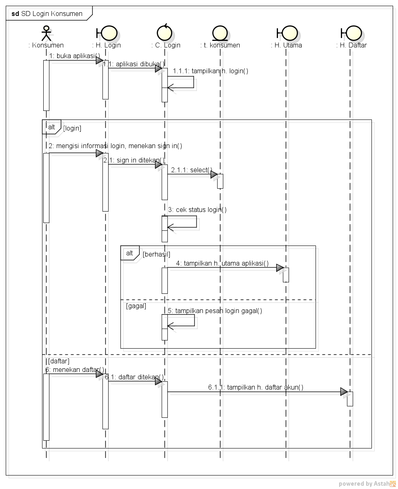

Nama : Gerry
NIM : 1811500101
Kelompok : TI6A
Hasil saya menyadur pertemuan ke-7 :
1. hari terakhir untuk nilai absen dan tugas
2. biasanya basis web untuk pelayan toko dan konsumen basis aplikasi
3. sequence diagram digunakan untuk menggambarkan urutan di form
4. dalam sequence diagram untuk memberi nama titik dua di depan jangan di hapus
5. Sequence Diagram sangat erat hubungannya dengan Deskripsi UseCase/Rancangan Layar/Class Diagram
6. Elemen inti
Actor = pengguna aplikasi/sistem
Boundary = halaman di aplikasi
Control = code program
Entity = tabel
Message = aktivitas di aplikasi/sistem
7.boundary adalah fisik yg kita lihat
Sequence Diagram

Download Materi Ajar :
Download